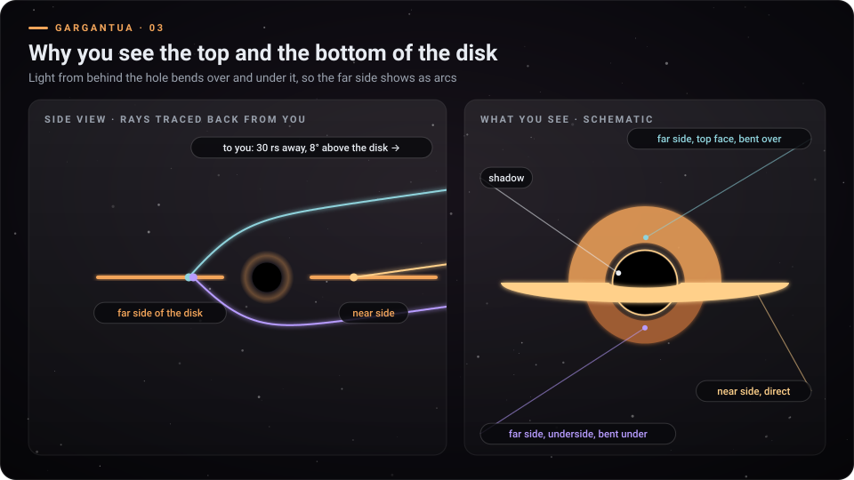

Gargantua
01
02
u″ = −u + 1,5 u² · b
crit
= 3√3 / 2 rs

03
D = 1 / (γ (1 − β·n)) · I ∝ (g D)⁴
04
τ = (2/3)(r₀^1,5 − r^1,5) rs/c · a
tide
= 2GM ℓ / r³
05
dr/dT = 1 − 1/√r · f
relay
/ f
craft
= (1 − 1/√r) / √(1 − 1/22)
06
L = r₀ sin d / √(r₀ − 1) · L
crit
= 2 rs c
07
0,9 c
v
rel
= 2v / (1 + v²) · cos θ′ = (cos θ + β) / (1 + β cos θ)
08
+
×
‹
›